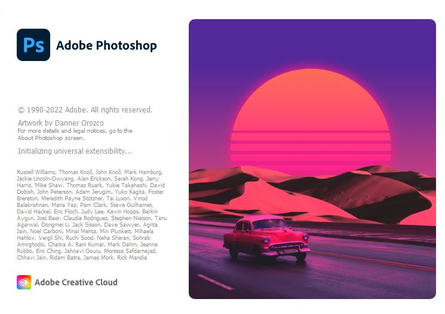
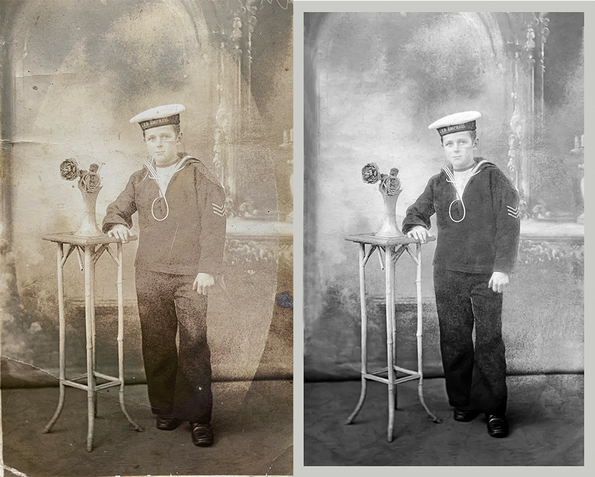
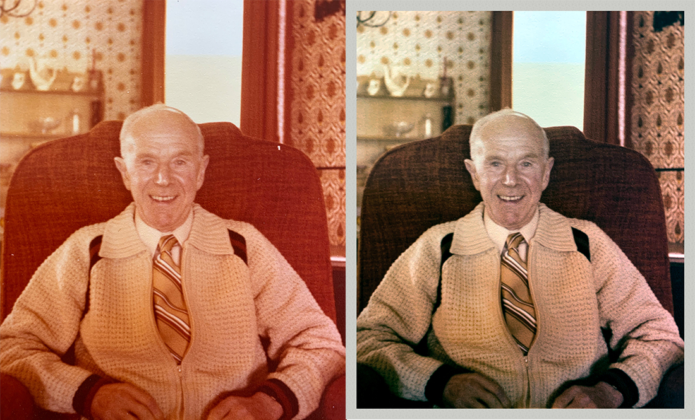
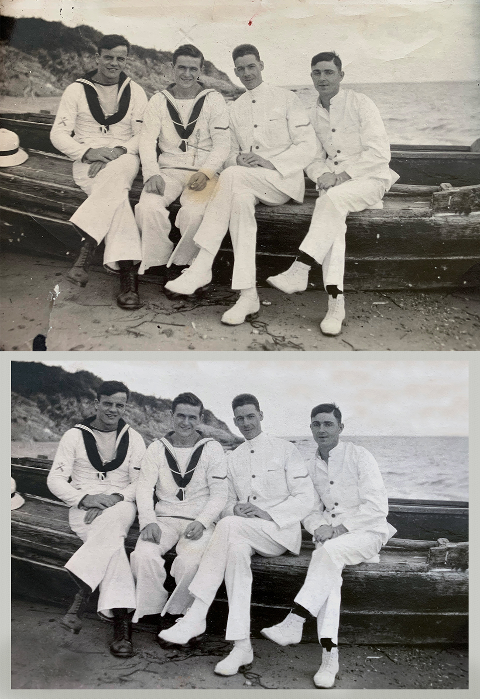
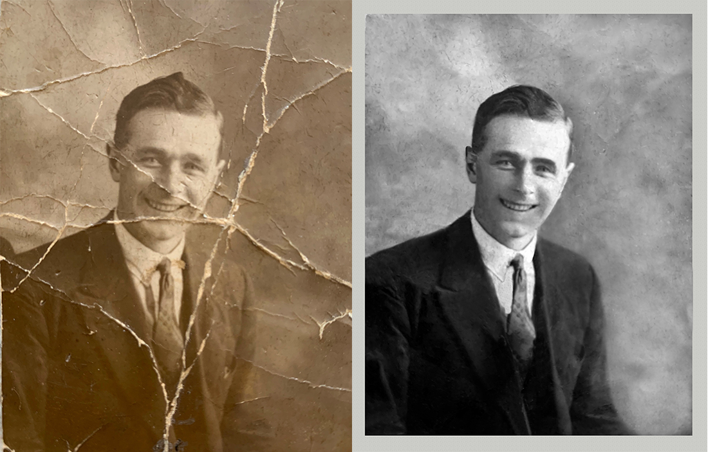
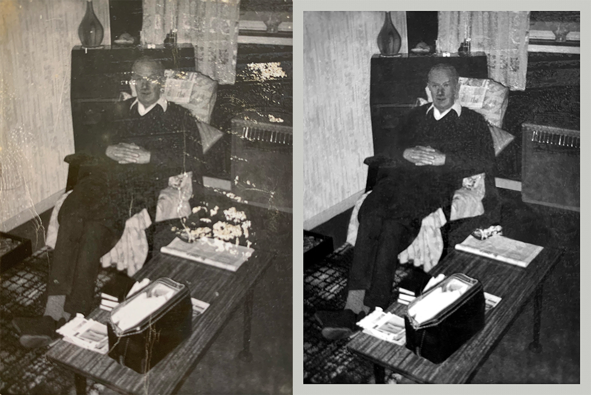

When I first discovered photoshop while taking a class in middle school, I felt inspired by the endless possibilities that it offers. I continued using Photoshop regularly, and took two semesters of it at the Santa Rosa Junior College, earning a skills certificate. In one of my classes, I was introduced to photo restorations using Photoshop. Outside of class, I restored some old family photos and received great feedback. I enjoy being able to repair important photographs and their history, and I think that Photoshop is a powerful tool to achieve it.
I believe Photoshop is in some way the contemporary darkroom, the creative area that all photographers have available today.
- Douglas Kirkland
Photographs fade and get damaged over time, and this can distract from the memories they capture. Looking back on loved ones through faded colors, rips, tears, and stains can often be unpleasant. Using Adobe Photoshop, I can restore your old, damaged photographs. Here are some ways I can restore and improve your old photos:

Using Adobe Photoshop I can edit and manipulate your photos to better fit your needs. Whether this is removing unwanted objects in the picture, creating composite images, or anything else you might think of. Some other things I can do are:




